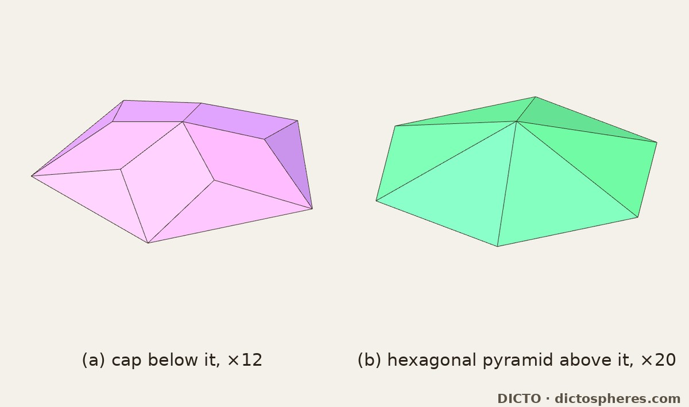
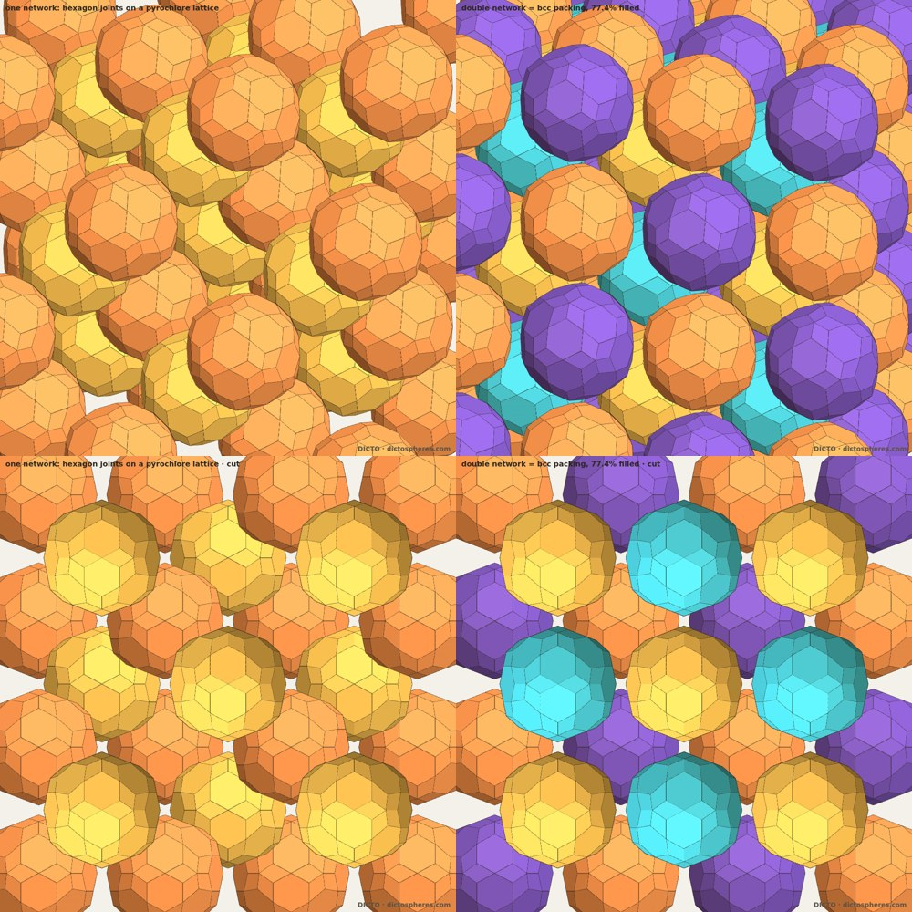

A convex icosahedral solid of 20 regular hexagons and 60 kites: how it appeared when the Spheres of Dharma were turned inside out, the solid itself, its place in the reversed cycle, its face arrangement, and its packings
DICTO (artist, Osaka, Japan) · contact@dictospheres.com · https://dictospheres.com
Draft 3 · 16 October 2026 · DICTO DOI: on publication · Licence CC BY 4.0 · Data, scripts and exact checks: https://github.com/DICTOR-Master/kaleidohedra (studies/2026-10-16-polar-dharma; face arrangement in studies/2026-10-16-ocd-pyrochlore).
The Hecatodihedron, the idea of turning the Spheres of Dharma inside out (first by flipping its pieces, then by polar reciprocation), the name Ogdoecontahedron, and the idea of joining copies on their hexagons into pyrochlore networks are DICTO's. Computation, exact arithmetic and renders were done with Claude (Anthropic) as a research assistant.
Abstract. DICTO asked what the Spheres of Dharma, an exact cycle of nested icosahedral solids, look like turned inside out. Flipping each layer's pieces over does not work: no layer closes into a shell. Polar reciprocation does: it reverses the cycle, and every station becomes a classical solid except one. The dual of the DICTO Truncated-Icosahedral Hecatodihedron is new, and DICTO named it the Ogdoecontahedron for its 80 faces. It has 20 regular hexagons and 60 kites, 102 corners and 180 edges, only two edge lengths and two dihedral angles, and 90 of its corners on one sphere, the inside-out image of the Hecatodihedron's 90 faces touching one sphere; every coordinate is exact in ℚ(√5). It is the pentakis dodecahedron with its 20 six-fold corners cut off flat. In the reversed cycle its 90 sphere corners are the icosidodecahedron's sphere, its hexagons hold the icosidodecahedron's triangles, its kites lie in the pentakis dodecahedron's faces, and one kind of piece fills each layer beside it. Its face arrangement is known (the dual of L0 applied to the dodecahedron, in the notation of the Antiprism software), but the metric solid was not found in the sources checked. Copies joined face to face on hexagons form a diamond network whose joints lie on a pyrochlore lattice; two such networks together are a body-centred cubic packing filling exactly (9225 − 3915√5)/608 ≈ 77.43% of space, more than the densest packing of equal spheres. On its own it is not a piece of an icosahedral quasicrystal; five of its periodic packings meeting round a five-fold axis are the subject of a separate paper (#30).
1. How it was found
The Spheres of Dharma (DICTO DOI: 10.5281/zenodo.23310833) is an exact cycle of nested icosahedral solids: icosahedron ⊂ icosidodecahedron ⊂ dodecahedron ⊂ truncated icosahedron ⊂ Hecatodihedron ⊂ rhombic triacontahedron ⊂ icosahedron φ³ larger, each layer (skin) filled by a few repeated pieces. The DICTO Truncated-Icosahedral Hecatodihedron (DICTO DOI: 10.5281/zenodo.23360858) is the truncated icosahedron with a Shield, a low hexagonal pyramid, on each hexagon: 102 faces (12 pentagons, 30 rhombi, 60 triangles) and 80 corners. It arises as the seventh stage of the Spheres of Dharma, taking each closed stage as one solid (Capturing the In-betweens, DICTO DOI: 10.5281/zenodo.23345502).
On 13 October 2026 DICTO asked what the cycle looks like turned inside out. First attempt: flip the pieces. Every piece of every skin was turned over through the sphere midway between its two solids, as a physical half-turn. No skin closes into a shell. Skins of a few large pyramids drift apart, covering only 3–8% of the midway sphere, and the closed skins crowd, about a third of the sphere covered twice. The flipped pieces always rest on the inner solid and never cut into it. Dharma's pieces are shaped for their direction; turning the cycle inside out needs new pieces.
Second attempt: polar reciprocation. Reciprocation in a sphere about the common centre sends each face plane to a point and each corner to a plane, so every solid goes to its dual, and the nesting reverses (a classical fact of convex geometry; see e.g. Firsching 2015). We reciprocated every station exactly in ℚ(√5). The reversed cycle is
Duality swaps the icosahedron with the dodecahedron and the icosidodecahedron with the triacontahedron, and turns the truncated icosahedron into the pentakis dodecahedron: all classical. The one new station is the polar of the Hecatodihedron. We drew it on its own, and DICTO named it for its faces, as he named the Hecatodihedron for its 102: the Ogdoecontahedron, from Greek ὀγδοήκοντα (eighty) and ἕδρα (face). The reversed cycle as a whole, its pieces and its gaps, is the subject of a companion paper, The Spheres of Dharma Turned Inside Out.
2. The solid
Coordinates are in the scale of the reversed cycle (reciprocation in the unit sphere); all are exact in ℚ(√5) unless marked float.
80 faces, 102 corners, 180 edges (102 − 180 + 80 = 2). Each face is the dual of a Hecatodihedron corner. The 20 Shield apexes, where six faces meet, become 20 regular hexagons; the 60 corners of the truncated icosahedron, where four faces meet, become 60 kites. Corners: 12 where five faces meet, 30 where four meet, 60 where three meet.
Two edge lengths. The hexagon side squared is 2/9 − 2√5/27 (side 0.237881); each kite has two sides of that length, next to the hexagons, and two of squared length 86/3249 + 2√5/361 (side 0.197124): 120 edges of the first length and 60 of the second. The hexagons are regular (all angles 120°); the kite angles are 117.85° (twice), 68.62° and 55.69°.
One sphere, inside out. 90 corners lie exactly on the sphere of radius 2/3; the other 12 sit just outside, at squared radius (170 + 2√5)/361. The Hecatodihedron has 90 faces touching one sphere and its 12 pentagons a little inside it: reciprocation trades a tangent sphere of faces for a sphere of corners.
Built from the dual side. The Hecatodihedron adds a pyramid-like Shield to each hexagon of the truncated icosahedron; dually, the Ogdoecontahedron is the pentakis dodecahedron (the truncated icosahedron's dual) with its 20 six-fold corners cut off flat into regular hexagons. Adding a cap on one side is cutting a corner on the other.
Two face distances, no insphere. The hexagons lie at squared distance 2/9 + 2√5/27 from the centre (0.6228), the kites further out at (42 + 2√5)/109 (0.6529).
Two dihedral angles (float): 156.20° on the 120 kite–hexagon edges and 156.72° on the 60 kite–kite edges, as the Hecatodihedron has only two edge angles.
Volume (−1000 + 1240√5)/1539. It is convex and centrally symmetric (checked exactly), with full icosahedral symmetry.
Figure 1. The DICTO Ogdoecontahedron, hexagons wisteria, kites cyan: (a) oblique; (b) along a three-fold axis, a regular hexagon in the centre; (c) along a five-fold axis, one of the 12 outer corners where five kites meet.
3. Its place in the reversed cycle
On the icosidodecahedron's sphere. Its 90 sphere corners lie exactly on the icosidodecahedron's circumsphere (radius 2/3); 30 of them, its two-fold corners, are the icosidodecahedron's own corners.
Held between two classical solids. Its 20 hexagons lie in the planes of the icosidodecahedron's 20 triangles, each hexagon holding a triangle; its 60 kites lie in the faces of the pentakis dodecahedron around it.
One kind of piece on each side. Cutting each layer by cones from the centre over the faces of its inner solid gives one kind of convex piece per layer (Kion construction, Theaetetus, DICTO DOI: 10.5281/zenodo.23378070). Below it, 12 caps on the icosidodecahedron's pentagons, each (−155 + 101√5)/4617; above it, 20 low pyramids on its regular hexagons, each (−22 + 10√5)/81. Each layer sums to its exact volume with remainder 0.

Figure 2. The two kinds of piece beside the Ogdoecontahedron in the reversed cycle, seen from the side with the outward direction up, each at its own scale: (a) a cap between the icosidodecahedron and the Ogdoecontahedron; (b) a low pyramid on one of its regular hexagons, out to the pentakis dodecahedron.
4. Its face arrangement is known; the solid is not
Combinatorially (which faces meet which, ignoring shape), the Ogdoecontahedron is the pentakis dodecahedron with its 20 six-fold corners cut down to the edge midpoints. In the operator notation of the Antiprism software (Rossiter) it is the dual of L0 applied to the dodecahedron, so the Hecatodihedron has the arrangement of L0(D). We checked this by an exact isomorphism search on the face maps (mirror images allowed), with controls: randomly relabelled corners still match, and swapping two corners of one hexagon breaks the match. L0 was built from Antiprism's written definition; the program itself was not run.
What we did not find is this metric solid, with regular hexagons and these kites. McCooey's Visual Polyhedra (553 solids, scanned in full) has no solid with its counts or its dual's. The nearest catalogued relative is the 6-truncated pentakis dodecahedron (20 hexagons, 60 pentagons), whose truncation, carried to the edge midpoints, gives this arrangement.
5. Packings: pyrochlore networks
DICTO asked whether copies joined on their hexagons form pyrochlore networks. Because the solid is centrally symmetric, a copy shifted by t = 2dn/|n|² (n the hexagon's normal, d its distance) puts its opposite hexagon exactly on the shared one, with no rotation. Joining through a tetrahedral set of four hexagons (pairwise cosine −1/3) gives a diamond network, with |t|² = 8/9 + 8√5/27. Over 60 sites (1,770 pairs) no two copies overlap (exact test: two copies overlap if and only if half their offset lies inside the solid, since K − K = 2K); the only contacts are full-hexagon joints. Around every copy the four joint hexagons have their centres at the corners of a regular tetrahedron, and the joints, at the diamond bond midpoints, lie on the pyrochlore lattice of corner-sharing tetrahedra.
A second network, shifted into the diamond's empty sites, fits with no overlap and touches the first only on hexagons. Together they are one body-centred cubic lattice packing: every copy in the same orientation, touching eight neighbours through the eight hexagons that point to the corners of a cube. It fills exactly (9225 − 3915√5)/608 ≈ 77.43% of space, more than the densest packing of equal spheres (74.05%). A local search over lattices (Betke–Henk style, 200 starts, float) found a denser lattice packing, 0.789260, each copy touching 12 neighbours (10 on hexagons, 2 on kites); we believe but have not proved it to be the densest.

Figure 3. Hexagon-joined packings: (a) one network, its joints on a pyrochlore lattice; (b) two networks together, the body-centred cubic packing, 77.4% filled; (c), (d) the same, cut. Colours only tell copies apart.
6. Periodic and aperiodic
The Ogdoecontahedron combines the regular hexagon of periodic honeycombs with icosahedral symmetry, the symmetry of quasicrystals. On its own it is not a piece of an icosahedral quasicrystal (our bridge study, studies/2026-10-16-ogdoecontahedron-bridge, which tested the canonical primitive tiling and three standard cluster shells): its one tie is classical, its 30 two-fold corners being the corners of the icosidodecahedron, the 30-atom shell of the Tsai cluster (Takakura et al. 2007). Its 20 hexagon directions contain exactly five inscribed cubes, so it has five such body-centred cubic packings. When these five periodic packings meet round a five-fold axis, the copies that must be removed along that axis, together with the central copy, form exactly the Fibonacci chain near the centre; that is the subject of a separate paper (#30, DICTO DOI: 10.5281/zenodo.23396361).
7. Relation to known work, and reproducibility
Known and credited: polar reciprocation and duality (convex geometry; Firsching 2015); the pentakis dodecahedron and the truncation of its six-fold corners; the face arrangement, as above (Rossiter; McCooey); the diamond and pyrochlore lattices and body-centred cubic packing; lattice packings of convex polyhedra and the local-search method (Betke & Henk 2000); the packing density of equal spheres (Hales 1998). Not found in our reference library, McCooey's catalogue and web searches (16 October 2026): the metric Ogdoecontahedron, with regular hexagons and kites of 117.85°, 68.62° and 55.69°; its exact hexagon-joined packings.
In studies/2026-10-16-polar-dharma: polar.py (exact poles of the Hecatodihedron), hstar_render.py and render_hstar.html (Figure 1). Pieces: polar_pieces.py, polar_exact.py. Flip test: studies/2026-10-16-flip-test, flip.py. In studies/2026-10-16-ocd-pyrochlore: face arrangement ocd_dl0d.py and ocd_catalogue_scan.py; networks network.py; densest lattice packing densest.py.
References
M. Firsching, Computing maximal copies of polyhedra contained in a polyhedron, Experimental Mathematics 24 (2015) 98–105, doi:10.1080/10586458.2014.956374.
U. Betke, M. Henk, Densest lattice packings of 3-polytopes, Computational Geometry 16 (2000) 157–186, doi:10.1016/S0925-7721(00)00007-9.
T. C. Hales, An overview of the Kepler conjecture, arXiv:math/9811071 (1998).
A. Rossiter, Antiprism, polyhedron modelling software, https://www.antiprism.com.
D. McCooey, Visual Polyhedra, https://dmccooey.com/polyhedra (scanned 15 October 2026).
H. Takakura, C. P. Gómez, A. Yamamoto, M. de Boissieu, A. P. Tsai, Atomic structure of the binary icosahedral Yb–Cd quasicrystal, Nature Materials 6 (2007) 58–63, doi:10.1038/nmat1799.
DICTO, Spheres of Dharma, DICTO DOI: 10.5281/zenodo.23310833.
DICTO, Capturing the In-betweens, DICTO DOI: 10.5281/zenodo.23345502.
DICTO, The DICTO Truncated-Icosahedral Hecatodihedron, DICTO DOI: 10.5281/zenodo.23360858.
DICTO, The Spheres of Dharma Turned Inside Out (companion paper, in preparation).
DICTO, Is the DICTO Ogdoecontahedron a real periodic–aperiodic bridge? Study, 15 October 2026: https://github.com/DICTOR-Master/kaleidohedra/tree/3fd407f/studies/2026-10-16-ogdoecontahedron-bridge.
DICTO, A Fibonacci Spine in a Five-fold Chorus of Ogdoecontahedron Packings, DICTO DOI: 10.5281/zenodo.23396361.